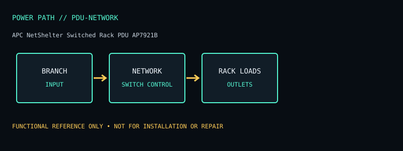

[ NETWORKED / SWITCHED PDUS // MODEL RECORD ]
APC NetShelter Switched Rack PDU AP7921B
Network-managed 1U switched rack PDU for 208/230 V service; eight IEC C13 receptacles. The specifications below are for this named model and region only; verify the complete product label and matching manual before deployment or service.

ARCHIVAL IDENTIFICATION: Preserve the complete SKU, suffix, region, date code, revision, installed battery part (if present), firmware and physical condition. Similar model names do not establish hardware equivalence.
Specifications, conditions & service
| Catalog subcategory | Networked / switched PDUs |
|---|---|
| Topology / power path | Rack power distribution with remote outlet switching; no backup inverter, battery or line conditioning. |
| Ratings / output configuration | APC’s product listing identifies 16 A, 208/230 V input variants (up to 3.3 kW at 208 V or 3.7 kW at 230 V); use the marked rating for exact supply. Eight IEC C13 outlets; C20 input cord/connector on the listed configuration. Output limits and input branch protection govern simultaneous load. |
| Battery / replaceability | No battery. |
| Runtime / limits and conditions | No runtime; PDU is source-dependent and does not ride through an outage. |
| Interfaces / monitoring | Network management for remote monitoring/control and outlet switching; exact network protocols and security features depend on model firmware and installed management module. |
| Safety / installation caveats | 230/208 V configuration is not compatible with 120 V loads unless their input supports that voltage. Check outlet voltage, branch circuit, cord and total current before connecting equipment. Switching outlets remotely interrupts loads. |
| Model variants / revision checks | AP7921B regional connector/voltage configuration differs from AP7920B and similar AP79 models. Product listing may show alternate 208/230 V electrical values; match nameplate. |
Field service / archive notes
- Record labels and connector layout before installation; document load, input conditions, measured behavior and test date separately from manufacturer-rated values.
- Never open energized mains equipment. Battery devices can retain dangerous voltage or high fault current; follow the manufacturer’s replacement and recycling procedure.
- Inspect enclosure, cord, plugs, grounding, indicators, alarms and battery condition. Quarantine damaged, swollen, leaking or heat-affected equipment.
- Network-management appliances should be isolated, updated where supported and configured with non-default credentials; do not expose legacy management interfaces directly to the public internet.
Manufacturer references
- Manufacturer product listing — APC NetShelter Switched Rack PDU AP7921BModel identity and product-family specification reference. Confirm exact regional SKU against the chassis label.
- Manufacturer manual / support documentationConsult the version matching the exact SKU. Runtime references are load- and condition-dependent estimates where supplied, never a guarantee for a particular aged unit.